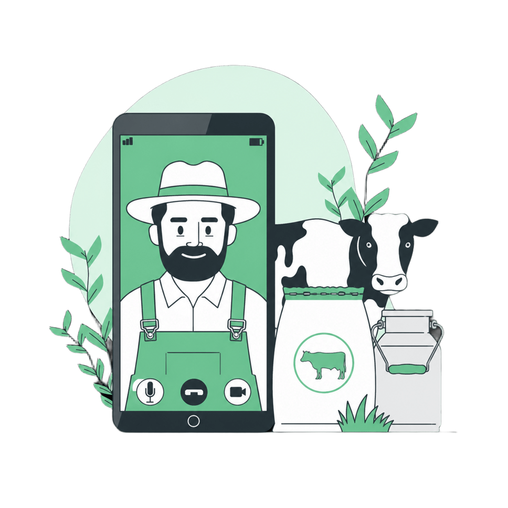
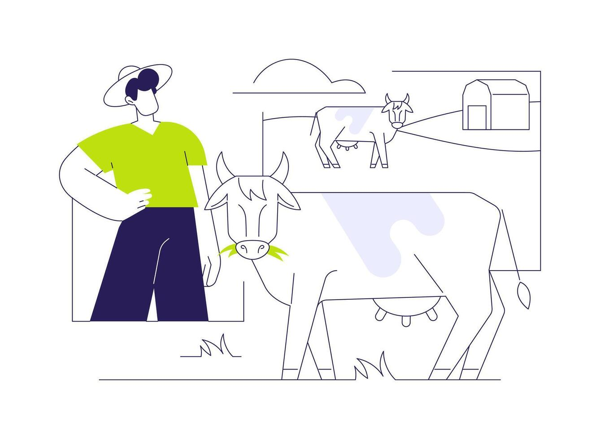
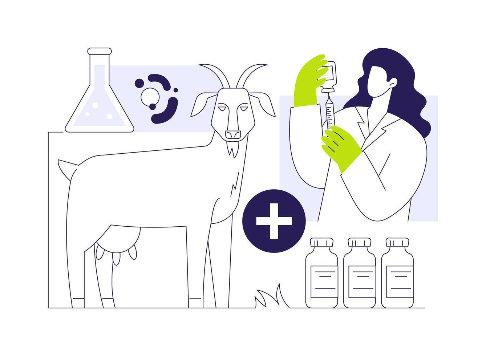
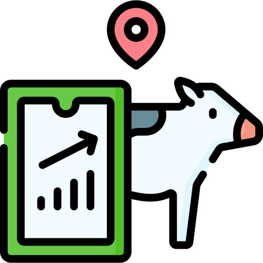
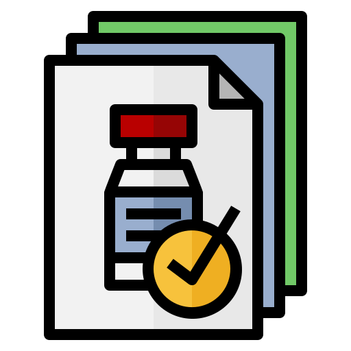

Bienvenido a BOVIX
Diseñado para ganaderos y veterinarios
Diseñado para ganaderos y veterinarios
AgroCare es una startup peruana de tecnología agrícola fundada por un equipo de estudiantes de Ingeniería de Software de la Universidad de Ciencias Aplicadas del Perú (UPC). Fue creada en respuesta a un problema real y urgente en el sector ganadero peruano: la falta de herramientas digitales accesibles que permitan a los productores, tanto independientes como comerciales, gestionar su ganado de manera eficiente, con trazabilidad y de forma sostenible.


Bovix es una plataforma móvil intuitiva que te permite controlar tus operaciones ganaderas de forma eficiente y organizada. Con nuestra app, puedes registrar y monitorear en tiempo real la salud, la alimentación y la reproducción de cada animal, recibir alertas automáticas y acceder a contactos veterinarios, incluso en zonas rurales con baja conectividad. Todo en un solo lugar, para que puedas concentrarte en tomar decisiones informadas y mejorar la productividad y el bienestar de tu ganado sin complicaciones.
Bovix es una herramienta digital integrada que facilita la gestión de su trabajo clínico tanto en la clínica como en el campo. Con nuestra plataforma, puede acceder y centralizar historiales clínicos, agilizar el registro de diagnósticos y mantener un control estructurado de los tratamientos y el seguimiento reproductivo. Optimiza la coordinación de citas y la comunicación directa con los ganaderos, lo que le permite brindar un servicio veterinario más eficiente, preciso y organizado.

Crea historiales clínicos individuales y organiza fácilmente tus animales por lotes
Asigne planes de alimentación y supervise el ciclo reproductivo de su rebaño

Reciba recordatorios sobre vacunas y prevención de enfermedades para evitar pérdidas

Revise el historial médico completo del ganado de sus clientes en cualquier momento
Reciba solicitudes, programe y gestione sus visitas técnicas de forma organizada

Emitir diagnósticos sobre el terreno, prescribir tratamientos y registrar la administración de vacunas.

Estudiante

Estudiante

Estudiante

Estudiante

Estudiante